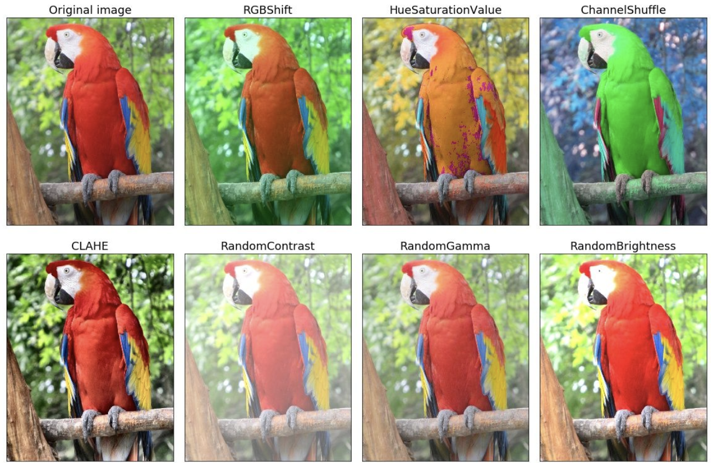
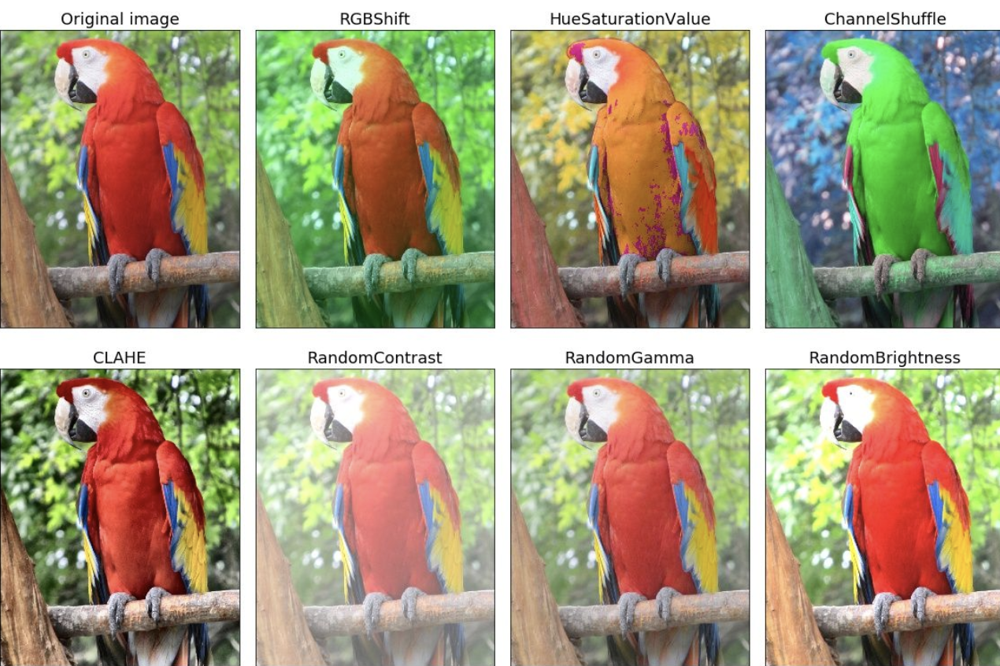

1.6 图像增强¶
学习目标
- 知道图像增强的常用方法
- 能够利用torchvision来完成图像增强

大规模数据集是成功应用深度神经网络的前提。例如，我们可以对图像进行不同方式的裁剪，使感兴趣的物体出现在不同位置，从而减轻模型对物体出现位置的依赖性。我们也可以调整亮度、色彩等因素来降低模型对色彩的敏感度。可以说，在当年AlexNet的成功中，图像增强技术功不可没
1.常用的图像增强方法¶
图像增强（image augmentation）指通过剪切、旋转/反射/翻转变换、缩放变换、平移变换、尺度变换、对比度变换、噪声扰动、颜色变换等一种或多种组合数据增强变换的方式来增加数据集的大小。图像增强的意义是通过对训练图像做一系列随机改变，来产生相似但又不同的训练样本，从而扩大训练数据集的规模，而且随机改变训练样本可以降低模型对某些属性的依赖，从而提高模型的泛化能力。
常见的图像增强方式可以分为两类：几何变换类和颜色变换类
- 几何变换类，主要是对图像进行几何变换操作，包括**翻转，旋转，裁剪，变形，缩放**等。

- 颜色变换类，指通过模糊、颜色变换、擦除、填充等方式对图像进行处理

实现图像增强可以通过torchvision.transforms来完成。
2.torchvision.transforms进行图像增强¶
torchvision中的图像增强方法主要是针对 PIL.Image 对象和 torch.Tensor 对象。在这里我们使用pillow读取图像进行增强，pillow读取的图像数据是PIL.Image 对象，经transforms增强后仍然是 PIL.Image 对象。首先我们导入所需的工具包并读取要处理的图像：
# 导入相应的工具包：图像读取，图像增强和绘制图像的
from PIL import Image
from torchvision import transforms
import matplotlib.pyplot as plt
# 读取图像并进行显示
dog = Image.open('./dog.jpg')
plt.imshow(dog)
图像的展示结果如下所示：
2.1 几何变换¶
左右翻转图像是最早也是最广泛使用的一种图像增广方法。可以通过transforms.RandomHorizontalFlip(p=0.5)来实现图像左右翻转，参数P表示水平翻转的概率。
# 水平翻转：以0.5的概率进行水平翻转
transforms_HF =transforms.RandomHorizontalFlip(p=0.5)
dog_HF = transforms_HF(dog)
plt.imshow(dog_HF)
创建transforms.RandomVerticalFlip(p=0.5)实例来实现图像的上下翻转，上下翻转使用的较少。
# 垂直上下翻转：以0.5的概率进行翻转
transforms_VF=transforms.RandomVerticalFlip(p=0.5)
dog_VF = transforms_VF(dog)
plt.imshow(dog_VF)
随机裁剪是从原始图像中裁剪出一部分区域，并且要对宽高进行设置，使用的方法是transforms.RandomCrop(size=(H, W))，H和W要小于图像的高和图像的宽。
# 随机裁剪：宽高要小于原始图像的宽高
transforms_RC=transforms.RandomCrop(size=(600, 600))
dog_RC = transforms_RC(dog)
plt.imshow(dog_RC)
图像尺寸的调整，这个方法我们在前面已经多次使用过，即完成图像尺寸大小的调整。
# 尺寸调整
transforms_RS=transforms.Resize(size=(224, 224))
dog_RS = transforms_RS(dog)
plt.imshow(dog_RS)
2.2 颜色变换¶
另一类增强方法是颜色变换。我们可以从4个方面改变图像的颜色：亮度、对比度、饱和度和色调。使用的API是transforms.ColorJitter(brightness=0, contrast=0, saturation=0, hue=0)：
- brightness:亮度，取值范围为 [0.0, 1.0], 当取值为0.5时，表示将图像的亮度随机变化为原图亮度的50\%（即1-0.5）\sim 150\%（即1+0.5）之间。
- contrast：对比度,取值范围为 [0.0, 1.0], 当取值为0.5时，表示将图像的对比度随机变化为原图对比度的50\%（即1-0.5）\sim 150\%（即1+0.5）之间。
- saturation：饱和度,取值范围为 [0.0, 1.0], 当取值为0.5时，表示将图像的饱和度随机变化为原图饱和度的50\%（即1-0.5）\sim 150\%（即1+0.5）之间。
- hue：色调，取值范围为 [-0.5, 0.5]，当取值为0.2时，表示将图像的色调就在[-0.2,0.2]之间取值。
接下来我们将亮度，对比度和饱和度设置为0.5，色调设置为0.2，对图像进行增强实现如下所示：
# 颜色调整
transforms_color =transforms.ColorJitter(brightness=0.5, contrast=0.5, saturation=0.5, hue=0.2)
dog_color = transforms_color(dog)
plt.imshow(dog_color)
2.3 增强方法的组合¶
我们可以将几何增强和颜色增强组合在一起对图像进行增强，使用的方法是transforms.Compose(transforms) 。我们将颜色增强和尺寸变换组合在一起，具体使用如下所示：
# 将几何变换和颜色变换组合在一起
transform = transforms.Compose([transforms_RS,transforms_color])
dog_ = transform(dog)
plt.imshow(dog_)
增强后的结果如下所示：（图像的尺寸进行了增强+颜色也进行了增强）
总结
- 常用的图像增强方法：几何和颜色
- 使用torchvision.transforms完成图像增强